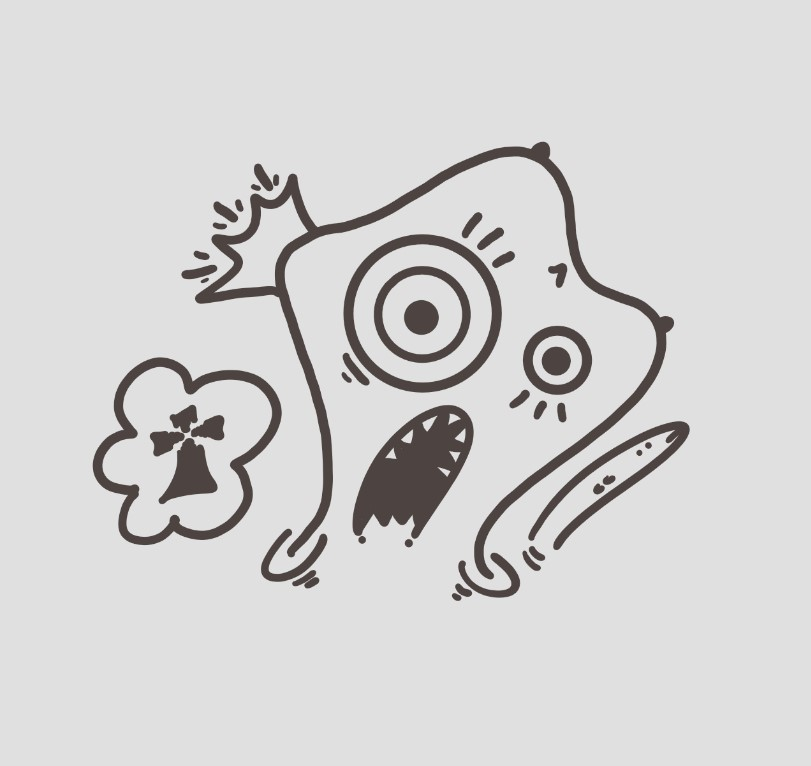

Who am Frankye?

Frankye è un personaggio, una maschera, un qualcosa.
E' un personaggio che ama la musica, ama disegnare, ma senza saperlo fare.
Frankye ama le donne che sanno di merluzzo.
In quanto giovane, nato da poco, preferisce scherzare che prendere sul serio le cose.
Disegna cose anche oscene, ma le nasconde, o almeno ci prova.